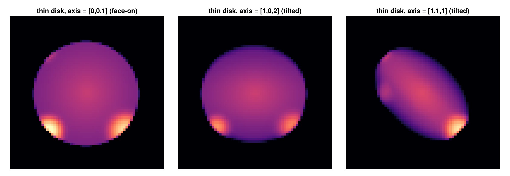
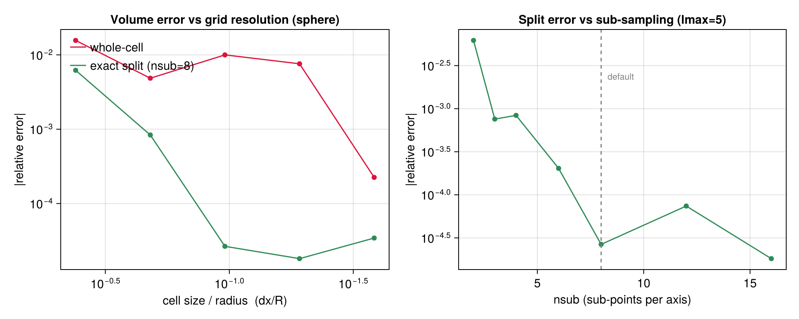
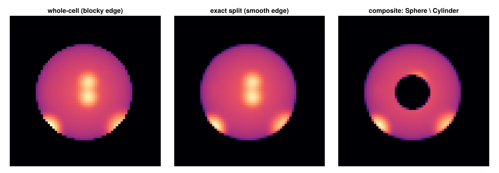

Subregions API Reference
Functions for defining and working with spatial subregions using different geometric shapes.
Which data types
Both functions dispatch on DataSetType, so they work on every data type Mera loads, not only the four with tutorial pages. The tutorials cover hydro, gravity, particles and clumps; RT and sinks are not written up but are supported by the same code.
| data type | subregion | shellregion | cell= | :fraction |
|---|---|---|---|---|
| hydro | yes | yes | yes | yes |
| gravity | yes | yes | yes | yes |
| RT | yes | yes | yes | yes |
| particles | yes | yes | ignored (points) | no |
| clumps | yes | yes | ignored (points) | no |
| sinks | yes | yes | ignored (points) | no |
cell= decides whether a cell on the border is included whole or by its centre, so it is meaningful only for AMR cell data. Particles, clumps and sinks are points: they are in or out, and the keyword is accepted and ignored.
:fraction is the better answer for cell data: the region value form, subregion(gas, sphere(10.)), gives each border cell the part of it that lies inside. The shape symbols shown here (:sphere, :cylinder, :cuboid) keep the whole-or-nothing rule. See What the fraction is applied to below.
What the fraction is applied to
Only quantities that measure how much there is in a cell are scaled by the fraction: mass, volume, and the energies built from them. A quantity that describes what the gas is like keeps its value, because that value is the same whichever part of the cell you keep. Density, temperature, potential and field strength are all of this second kind.
Everything follows from :volume. Hydro also scales :mass, because it is the only cell type that carries a density. Magnetic energy is 0.5·B²·V, so it is scaled through the volume, while :bmag itself is not. RT has nothing to scale: :Np_total, :rad_energy_density and :photoionizations are all per unit volume already. For an RT total, multiply by the volume yourself and the fraction comes with it:
s = subregion(rt, sphere(10.))
total_photons = sum(getvar(s, :Np_total) .* getvar(s, :volume)):gravitational_energy, :total_binding_energy and :Fg are each a mass multiplied by a field quantity, the potential or the acceleration. Gravity carries no density, so the mass comes from the hydro object you pass in, and the fraction that matters is therefore the hydro object's. Cut both with the same region:
R = sphere(10.)
gs = subregion(grav, R)
hs = subregion(gas, R) # same region, so the same boundary cells
sum(getvar(gs, hs, :total_binding_energy))Mera refuses a hydro object that was cut a different way, or not cut at all. It compares the cell indices of both objects, not only how many there are, so a different cut is refused even when it holds the same number of cells. The error names what to fix.
subregion(obj, :sphere; …, periodic=true) and the other classic shapes, and shellregion, wrap around the box faces on every data type. periodic=(x=true, y=true, z=false) wraps only some axes, and a cylinder wraps only in its two radial directions. Region values (sphere(10.) and the others) are always clipped at the faces. Mera never wraps on its own; info.boundaries reports what the namelist says. See Periodic Boxes.
Every shape, keyword and trap on one page: Subregions cheatsheet.
Exported Functions
Main Subregion Functions
subregion: Unified interface for all geometric subregionsshellregion: Unified interface for all shell (hollow) regions
Supported Geometric Shapes
Cuboid/Box Regions
- Usage:
subregion(data, :cuboid, ...) - Shape: Box/rectangular regions defined by x, y, z ranges
- Parameters:
xrange,yrange,zrange,center
Cylindrical Regions
- Solid:
subregion(data, :cylinder, ...) - Shell:
shellregion(data, :cylinder, ...) - Shape: Cylinder defined by radius and height
- Parameters:
radius,height(half-height),center; along z only. For a tilted cylinder usecylinder(r, h; axis=[x, y, z])
Spherical Regions
- Solid:
subregion(data, :sphere, ...) - Shell:
shellregion(data, :sphere, ...) - Shape: ball defined by radius
- Parameters:
radius,center - Shell Parameters:
radius=[inner, outer]for hollow shells
Usage Examples
Solid Regions
# Cuboid selection
subregion(data, :cuboid, xrange=[0.3, 0.7], yrange=[0.3, 0.7])
# Cylindrical selection
subregion(data, :cylinder, radius=10., height=5., center=[24,24,24], range_unit=:kpc)
# Spherical selection
subregion(data, :sphere, radius=15., center=[24,24,24], range_unit=:kpc)Shell Regions
# Cylindrical shell (annular cylinder)
shellregion(data, :cylinder, radius=[5., 10.], height=2., range_unit=:kpc)
# Spherical shell (hollow sphere)
shellregion(data, :sphere, radius=[8., 12.], range_unit=:kpc)Coordinate Systems & Parameters
Common Parameters
center: Spatial center coordinates[x, y, z]range_unit: Units for spatial parameters (:kpc,:pc,:Mpc,:standard)inverse: Select region outside the specified geometryperiodic: wrap the region around the box faces (true, or per axis(x=true, y=true, z=false))verbose: Control output verbosity
Cuboid Parameters
xrange,yrange,zrange:[min, max]ranges for each axis
Cylindrical Parameters
radius: Cylinder radius (solid) or[inner, outer](shell)height: half-height (the cylinder spans ±height, so its total height is 2×height)direction: only:zis supported; another value is an error
Spherical Parameters
radius: ball radius (solid) or[inner, outer](shell)
Composable regions with exact cell splitting
Reference for the value-type API. For the same material derived step by step on real data, one sphere measured three ways, the mass ledger, and how exact "exact" is, see Get Subregions.
Alongside the symbol API (subregion(data, :sphere; …)), subregion accepts a region value type (sphere, cuboid, cylinder, sphericalshell, cylindricalshell). With split=true (the default for this form), cells straddling the region boundary are clipped exactly: each kept cell carries a :fraction ∈ (0,1] equal to the volume fraction inside the region, and getvar(:mass) / (:volume) / msum report the exact in-region totals, a sphere of radius R returns (4/3)πR³, with no boundary over- or under-counting.
gas_in = subregion(gas, sphere(20.0; center=[:bc], range_unit=:kpc)) # split=true
msum(gas_in, :Msol) # exact enclosed mass (boundary cells weighted by their inside-fraction)
subregion(gas, cuboid(xrange=[-10,10], yrange=[-10,10], zrange=[-2,2], range_unit=:kpc))
subregion(gas, sphericalshell(10.0, 20.0; range_unit=:kpc))
subregion(gas, cylindricalshell(3.0, 8.0, 4.0; range_unit=:kpc)) # value-type analogue of shellregion(:cylinder)
subregion(gas, cylinder(15.0, 3.0; range_unit=:kpc); split=false) # classic whole-cell selectionsplit=false reproduces the classic centre-inside, whole-cell selection (no :fraction). inverse=true selects the complement. The region types (AbstractRegion, sphere, cuboid, cylinder, sphericalshell, cylindricalshell) are listed in the API reference.
The value-type form works on all data types: hydro, gravity and RT (AMR cells, with exact volume splitting and a :fraction column), and particles, where it is a point-membership test (particles are points, so split/nsub do not apply and no :fraction is attached).
subregion(particles, sphere(20.0; range_unit=:kpc)) # stars/DM inside a ball
subregion(particles, sphere(20.0; range_unit=:kpc) \ cylinder(5.0, 30.0; range_unit=:kpc))
subregion(gravity, sphere(20.0; range_unit=:kpc)) # exact-split gravity cellsBoolean combinations
Regions compose with the operators ∩ (intersection), ∪ (union), \ (difference) and ! (complement), each result is itself a region, so they nest. The children may even have different centres.
Type ∩ as \cap then TAB and ∪ as \cup then TAB, in the REPL, Jupyter or VS Code. Unicode is never required: A & B, A | B, intersect(A, B), union(A, B) and setdiff(A, B) are the same operations spelled in ASCII.
subregion(gas, sphere(20.0; range_unit=:kpc) \ cylinder(5.0, 30.0; range_unit=:kpc)) # ball, cylinder drilled out
subregion(gas, sphere(20.0; range_unit=:kpc) ∩ cuboid(xrange=[-10,10], yrange=[-10,10], zrange=[-3,3], range_unit=:kpc))
subregion(gas, !sphere(20.0; range_unit=:kpc)) # everything outside the ballTilted cylinders, disks and shells (arbitrary axis)
Cylinder and CylindricalShell take an axis, their symmetry direction, so you can select an inclined disk, cylinder or annulus. The default [0,0,1] is the classic z-aligned case, and the volume does not depend on the orientation.
axis is any non-zero 3-vector giving a direction in the simulation's own x, y, z frame. Three things do not matter, so you rarely have to tidy a vector before passing it:
- Its length. It is normalised internally, so
[0,0,1]and[0,0,7.3]select the same cells. - Its sign. It marks an axis, not a way up, so
[0,0,1]and[0,0,-1]are the same region. - Its element type.
[1,0,2]and[1.0,0.0,2.0]behave identically.
It carries no units, because it is a direction: range_unit applies to the radius and height, never to axis. Anything that yields a 3-vector will do, a hand-written direction, an eigenvector, a field direction, or a measured angular momentum. A thin cylinder is a disk:
subregion(gas, cylinder(15.0, 1.0; axis=[1,0,2], range_unit=:kpc)) # a thin disk, tilted in the x-z plane
# A disk aligned with the galaxy's own spin. `face_on` measures the angular momentum
# for you, and `.angmom` is the vector to hand to `axis`.
spin = face_on(gas).angmom
subregion(gas, cylinder(15.0, 1.0; axis=spin, center=[:bc], range_unit=:kpc))
The same thin disk projected along z for three axis directions, face-on (a circle) and two tilts (foreshortened ellipses).
A shell tilts the same way, which is what you want for an annulus in the plane of an inclined disk:
subregion(gas, cylindricalshell(5.0, 10.0, 4.0; axis=spin, center=[:bc], range_unit=:kpc))Two shapes need no axis. sphere and sphericalshell are the same in every orientation, so tilting them would change nothing. Cuboid is axis-aligned only: its faces are always parallel to the box axes. That is deliberate rather than an oversight, because an axis-aligned box is the one shape whose inside-fraction is computed analytically, exact to machine precision, rather than by sampling. For a tilted slab use a thin Cylinder, which gives the same selection with an orientation.
Accuracy of the splitting
Exact splitting is dramatically more accurate than whole-cell selection, and converges with grid resolution. For a sphere, the whole-cell volume error stays at the ~0.5 to 1.5 % level and is erratic (it is a step function of which cell centres fall inside), while exact splitting (default nsub=8) is 10 to 100× smaller and falls smoothly as the cells shrink:

nsub (per-axis sub-sampling of boundary cells, default 8) trades cost for accuracy; the error floor past nsub≈8 is set by the grid resolution, not the sampling (right panel). Only boundary cells are ever sub-sampled, interior/exterior cells are an O(1) corner test, so the cost is modest. Cuboids are split analytically (exact, no sampling). The figure is reproduced by test/55_region_algebra_tests.jl (a CI convergence test) and docs/make_region_figures.jl.
Projections of split regions
The :fraction carries through to projection automatically: projection takes its mass weight from getvar(:mass), which honours :fraction, so a projection of a split subregion is exactly region-clipped: boundary cells are dimmed by their inside-fraction (a smooth, anti-aliased edge instead of a blocky one), and a :sd map integrates to the exact enclosed mass.
ball = subregion(gas, sphere(20.0; range_unit=:kpc)) # split=true
projection(ball, :sd, :Msol_pc2; pxsize=[100., :pc]) # exact clipped Σ-map
projection(subregion(gas, sphere(20.0; range_unit=:kpc) \ cylinder(5.0, 40.0; range_unit=:kpc)), :sd, :Msol_pc2)
Left → right: a sphere selected with whole cells (blocky edge), the same sphere with exact splitting (smooth edge), and a composite sphere \ cylinder (a ball with a cylindrical hole).
Additional Analysis Functions
getextent: Get spatial extent informationcenter_of_mass/com: Calculate center of massgetpositions: Extract position datagetvelocities: Extract velocity data
Data Type Support
All subregion functions support multiple data types through Julia's multiple dispatch:
- HydroDataType: Gas/fluid data with AMR support
- PartDataType: Particle/stellar data
- ClumpDataType: Halo/clump data
- GravDataType: Gravitational field data
For complete function documentation: see the Complete API Reference.
Function Reference
Mera.subregion — Function
subregion(data, shape::Symbol=:cuboid; xrange, yrange, zrange, radius, height, center,
range_unit=:standard, cell=true, inverse=false, periodic=false, kwargs...)Select the part of data inside a box, cylinder or sphere given by a shape name.
This older form keeps whole cells and stores no fractions, so totals over the region are not exact at the boundary. Prefer the region form, subregion(data, sphere(...)), which counts boundary cells by the part inside; Mera mentions it once per session.
Arguments
data: any Mera data object or a selection.shape::Symbol = :cuboid::cuboid,:sphere, or:cylinder(also:disc).
Keywords
Shape:
xrange,yrange,zrange:[min, max]of a:cuboid, inrange_unitand relative tocenter;missingmeans the full extent.radius: the radius of a:sphereor:cylinder, inrange_unit.height: the half-height of a:cylinder, from -heightto +heightaboutcenter.direction::Symbol = :z: the axis of a:cylinder; only:zis supported, others raise an error.
Position:
center = [0, 0, 0]: inrange_unit. The default is the box corner, which is right for a:cuboidwith absolute ranges; for a sphere or cylinder give[:bc]for the box centre, or a point[x, y, z], or mix them, e.g.[:bc, :bc, 12.0].range_unit::Symbol = :standard::standardmeans fractions of the box; any length unit ininfo.scaleworks, e.g.:kpc.periodic = false: wrap the region around the faces of a periodic box,truefor all axes or per axis as(x=true, y=true, z=false). Without it, the part outside the box is dropped, so a sphere on a face is a hemisphere. Cylinders wrap in their two radial axes only.
Selection:
cell::Bool = true: cell data only.truekeeps every cell the boundary touches;falsekeeps a cell when its centre lies inside.inverse::Bool = false: select the outside instead.verbose::Bool = true: print what is selected.myargs::ArgumentsType: set the ranges,radius,height,direction,center,range_unitandverbosein one object. A keyword given directly takes precedence.
Returns
An object of the same type as data, holding only the selected rows.
Examples
julia> s = subregion(gas, :sphere; radius=10, center=[:bc], range_unit=:kpc);
julia> s = subregion(gas, :cylinder; radius=15, height=2, center=[:bc], range_unit=:kpc);
julia> s = subregion(gas, :cuboid; xrange=[-5, 5], yrange=[-5, 5], zrange=[-1, 1],
center=[:bc], range_unit=:kpc, cell=false);See also shellregion, and the region form of subregion above.
subregion(data, region; split=true, inverse=false, nsub=8, refine=0, refine_to=nothing,
verbose=true) -> same type as dataSelect the part of data inside a region, counting cells cut by the boundary by the part that lies inside. This is the recommended form.
A region is a value made by sphere, cuboid, cylinder, sphericalshell or cylindricalshell, or a combination of regions with ∩, ∪, \ and !. With split=true each kept cell stores the fraction of its volume inside (:fraction), and getvar(:mass), getvar(:volume) and msum use it, so totals are the amounts inside the boundary and neighbouring regions add up exactly. Works on hydro, gravity, RT, particle, clump and sink data.
Arguments
data: the object to select from, or an earlier selection; fractions of repeated cuts multiply.region: the region, e.g.sphere(10; center=[:bc], range_unit=:kpc).
Keywords
split::Bool = true: store the fraction inside for cells on the boundary.falsekeeps a cell whole when its centre lies inside. For particles the default isfalse: points need no fraction, andsplit=trueis allowed only for gas cells with a:volume(moving-mesh and SPH codes), sized as a sphere of the same volume. Clumps and sinks have nosplit.inverse::Bool = false: select the outside instead; withsplit, the fractions are1 - f.nsub::Int = 8: sample points per axis for cells on a curved or combined boundary. A cuboid along the box axes is computed exactly.refine::Int = 0: cell data only. Subdivide the boundary cells, as an octree, up to this many levels, so the boundary is placed tocellsize/2^refineand maps of the selection have sharper edges. Totals do not change. The cost grows with the boundary area, at most $8^{refine}$ per boundary cell; 2 or 3 is usually enough.refine_to = [length, unit]: subdivide each boundary cell until its children are no larger than this, e.g. thepxsizeof a later map. Not together withrefine.verbose::Bool = true: print what is selected.
Returns
An object of the same type as data, holding only the selected rows; cell data with split=true also has the :fraction column.
On a 10 kpc sphere the split volume is off by -0.0015 %, the centre test by +0.18 % with no fixed sign, and whole cells by +12 %. For small regions the centre test is off by several per cent; the table is on the Computation Reference page.
Examples
julia> s = subregion(gas, sphere(10; center=[:bc], range_unit=:kpc));
julia> msum(s, :Msol) # the mass inside 10 kpc
julia> disc = cylinder(15, 2; center=[:bc], range_unit=:kpc);
julia> ring = subregion(gas, disc ∩ !sphere(5; center=[:bc], range_unit=:kpc));
julia> stars = subregion(part, sphere(10; center=[:bc], range_unit=:kpc));See also shellregion, msum, getmask, filterdata.
Mera.shellregion — Function
shellregion(data, shape::Symbol=:cylinder; radius=[r_in, r_out], height, center,
range_unit=:standard, cell=true, inverse=false, periodic=false, kwargs...)Select the part of data inside a spherical or cylindrical shell given by a shape name.
This older form keeps whole cells and stores no fractions. Prefer the region form, subregion(data, sphericalshell(r_in, r_out; ...)) or cylindricalshell(...), which counts the cells on both surfaces by the part inside, so neighbouring shells add up exactly.
Arguments
data: any Mera data object or a selection.shape::Symbol = :cylinder::cylinder(also:disc) or:sphere.
Keywords
Shape:
radius = [r_in, r_out]: the inner and outer radius, inrange_unit.height: the half-height of a:cylinder, from -heightto +heightaboutcenter.direction::Symbol = :z: the axis of a:cylinder; only:zis supported, others raise an error.
Position:
center = [0, 0, 0]: inrange_unit. The default is the box corner, which is rarely meant for a shell; give[:bc]for the box centre, a point[x, y, z], or mix them, e.g.[:bc, :bc, 12.0]. Mera reminds you once per shape when the corner is used.range_unit::Symbol = :standard::standardmeans fractions of the box; any length unit ininfo.scaleworks, e.g.:kpc.periodic = false: wrap the shell around the faces of a periodic box,truefor all axes or per axis as(x=true, y=true, z=false).
Selection:
cell::Bool = true: cell data only.truekeeps every cell the shell touches, on both surfaces, so neighbouring shells share the cells on their common surface;falsekeeps a cell when its centre lies in the shell.inverse::Bool = false: select everything outside the shell; withcell=truethat is exactly the cells not returned without it.verbose::Bool = true: print what is selected.myargs::ArgumentsType: setradius,height,direction,center,range_unitandverbosein one object. A keyword given directly takes precedence.
Returns
An object of the same type as data, holding only the selected rows.
Examples
julia> s = shellregion(gas, :sphere; radius=[5, 10], center=[:bc], range_unit=:kpc);
julia> s = shellregion(gas, :cylinder; radius=[5, 10], height=2, center=[:bc], range_unit=:kpc);See also subregion, sphericalshell, cylindricalshell.
Mera.@region — Macro
@region [unit=…] [center=…] begin … endBuild a (composite) region with shared constructor defaults and named parts. Inside the block, every Sphere/Cuboid/Cylinder/SphericalShell/CylindricalShell call that does not set range_unit/center itself receives the block's unit/center; explicit keywords always win. Assignments name intermediate parts; the block's last expression is the returned region — an ordinary AbstractRegion value, identical to writing the constructors out by hand.
capstone = @region unit=:kpc center=[:bc] begin
disc = cylinder(12, 2)
blister = sphere(2.5; center=[30, :bc, 26]) # explicit center wins
chimney = cylinder(1.2, 5; center=[19, :bc, :bc])
(disc ∪ blister) \ chimney
end
subregion(gas, capstone)Mera.sphere — Function
sphere(radius; center=[:bc], range_unit=:kpc)A ball of radius (in range_unit) about center. Returns a Mera.Sphere.
Mera.cylinder — Function
cylinder(radius, height; axis=[0,0,1], center=[:bc], range_unit=:kpc)A cylinder of cylindrical radius spanning ±height along axis (height is the half-height).
Returns a region value, for subregion and the region operators ∩, ∪, \ and !.
Mera.cuboid — Function
cuboid(; xrange, yrange, zrange, center=[:bc], range_unit=:kpc)An axis-aligned box; xrange/yrange/zrange are [lo, hi] offsets from center.
Returns a region value, for subregion and the region operators ∩, ∪, \ and !.
Mera.sphericalshell — Function
sphericalshell(r_in, r_out; center=[:bc], range_unit=:kpc)The shell r_in ≤ |r| ≤ r_out (in range_unit) about center.
Returns a region value, for subregion and the region operators ∩, ∪, \ and !.
Mera.cylindricalshell — Function
cylindricalshell(r_in, r_out, height; axis=[0,0,1], center=[:bc], range_unit=:kpc)A cylindrical shell r_in ≤ r_cyl ≤ r_out of half-height height along axis.
Returns a region value, for subregion and the region operators ∩, ∪, \ and !.